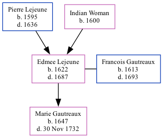

Edmee Gautreaux (née Lejeune) 1622 - 1687
[ Home ] | [ Calendar ] | [ Surnames Index ] | [ Family History ]The child of Pierre Lejeune and Indian Woman, Edmee Lejeune, the 10 times great-grandmother of Michele Copp (née Phillips), was born in Loudon, Vienne, Poitou-Charentes, France in 16221 and married Francois Gautreaux (with whom she had 1 child, Marie Francoise) in VI in 16351.
She died in 1687 in Port Royal, Acadia, Nova Scotia, Canada.
Parents
- Pierre was born in 1595
- Indian was born in 1600
Children
- Marie Francoise was born in 1647
Citations
- U.S. and International Marriage Records, 1560-1900 Online publication - Provo, UT, USA: The Generations Network, Inc., 2004.Original data - This unique collection of records was extracted from a variety of sources including family group sheets and electronic databases. Originally, the information was deriv
Family Tree
Generated by ged2site. Last updated on Sep 9, 2024